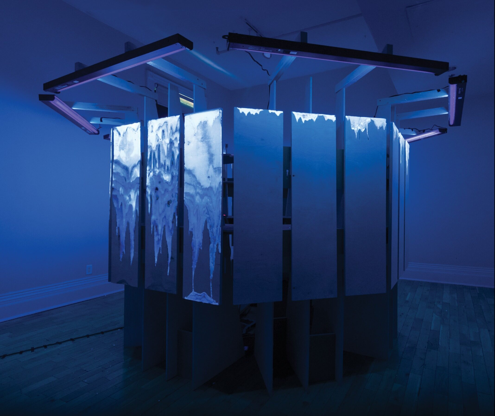
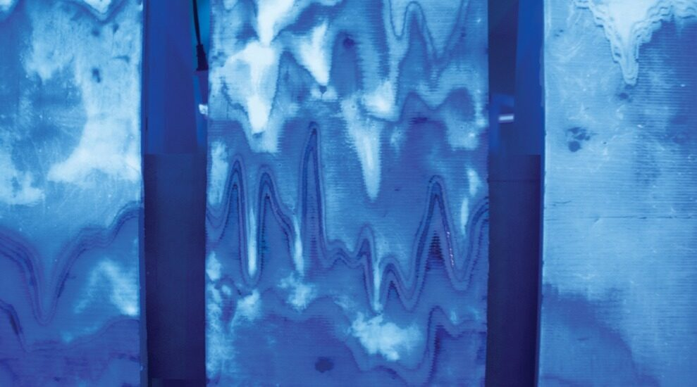
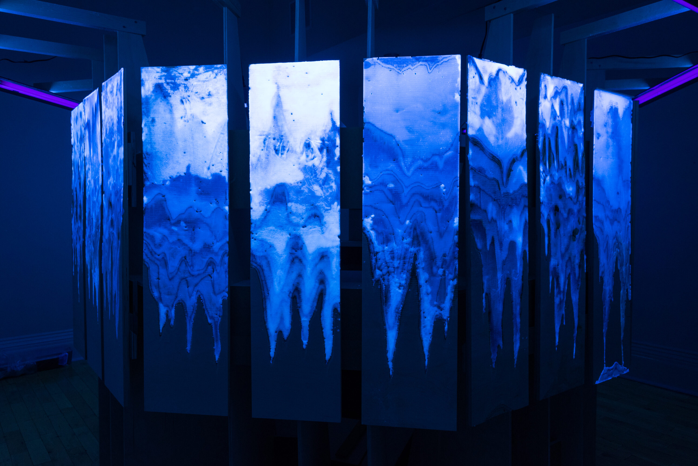
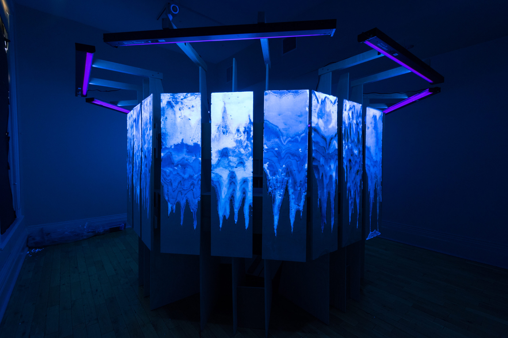
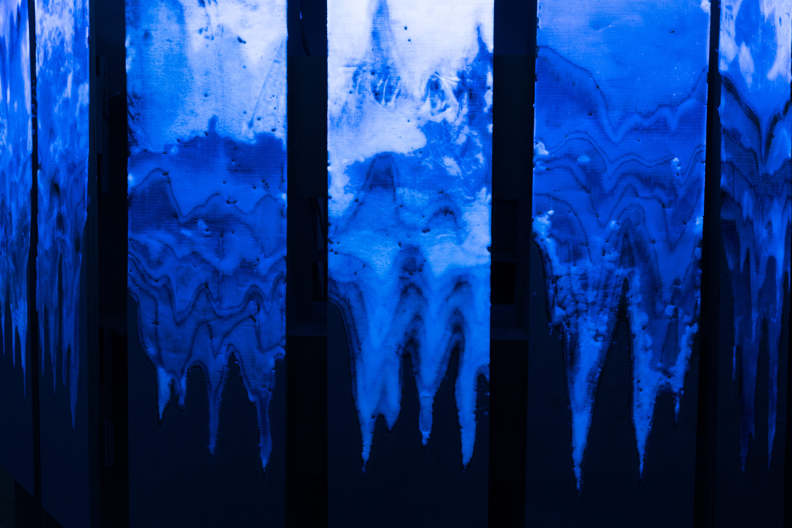
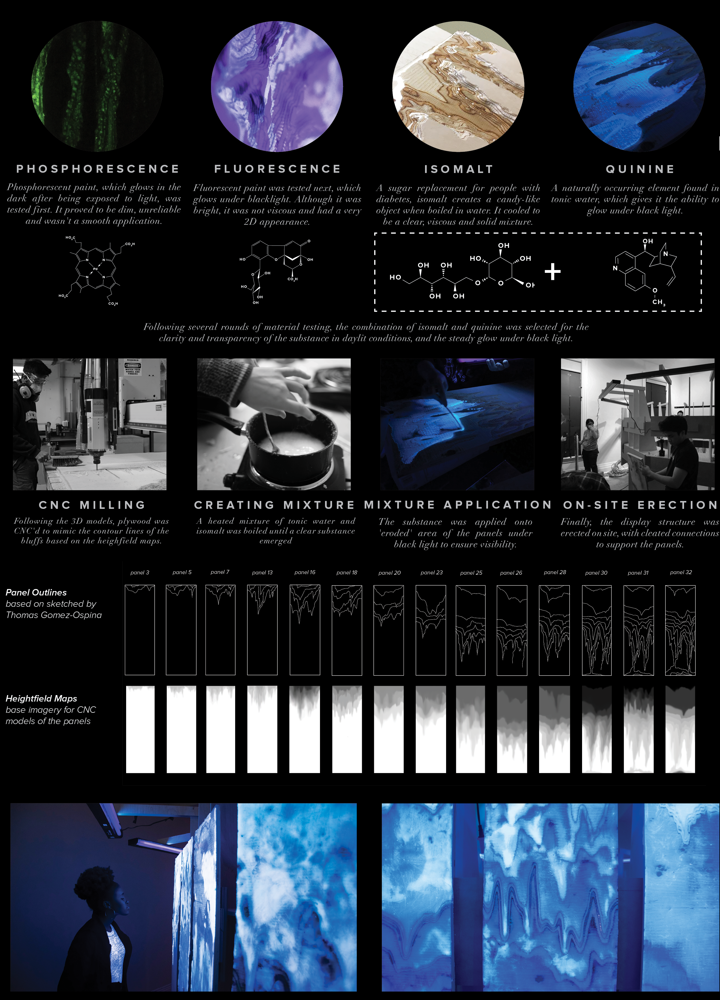

2018
STRATUM
an installation made of isomalt and tonic water
Drawing from references such as the Scarborough Bluffs, Stratum creates an immersive experience using sculpture and light to examine how humans live within natural forces of gravity, erosion and stratification. Material experimentation was a key element of the project, developing the chemical mixture of quinine and isomalt.
CONTEXT
Grow Op Exhibition 2018
LOCATION
Gladstone Hotel, Toronto
SOFTWARE
Rhinoceros3D, Illustrator, RhinoCam, CNC Mill
COLLABORATORS
Shengyu Cai, Jiaqi Liu, Thomas Gomez
ROLES
Design, 3D Modeling, Budgeting, Fabrication, Material Experimentation, Logistics, Detailing





